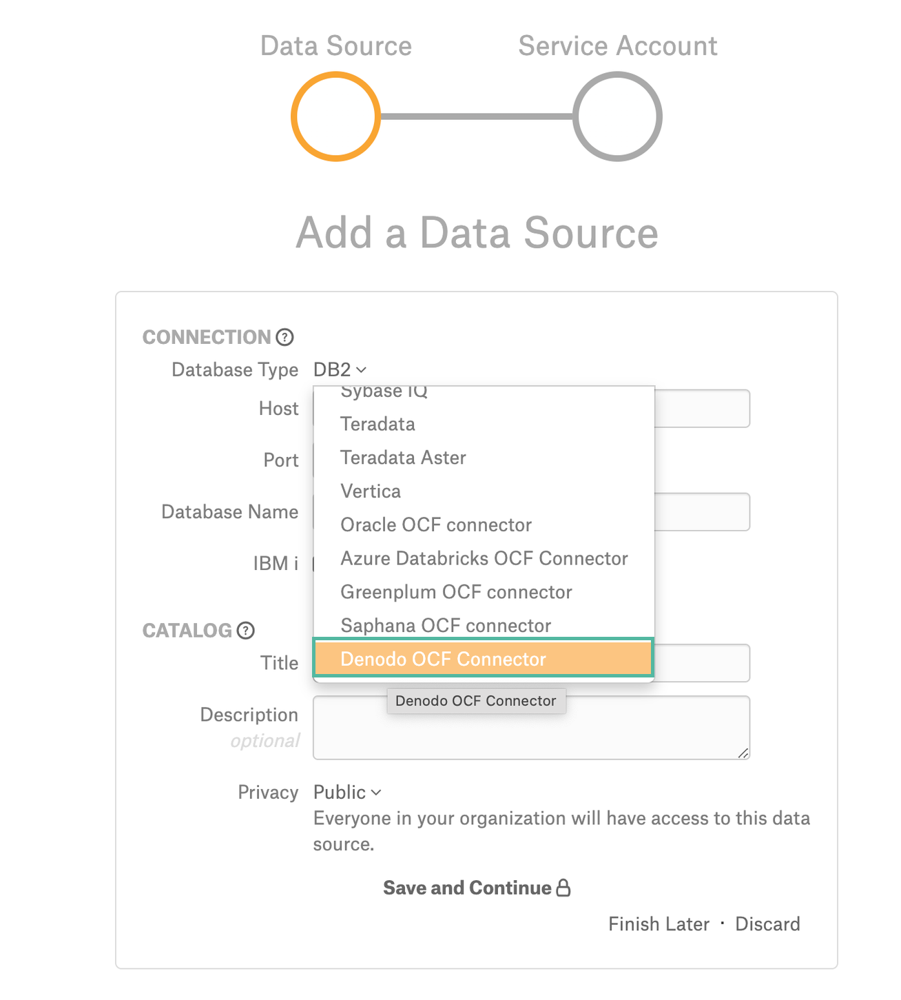
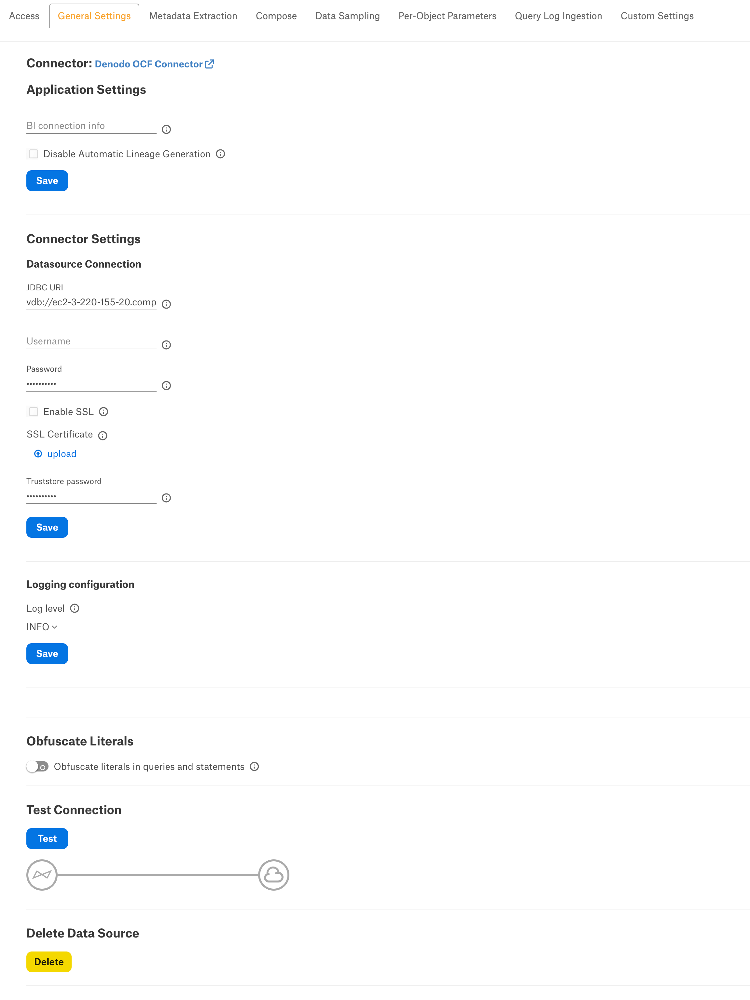

Denodo OCF Connector: Install and configure¶
Alation Cloud Service Applies to Alation Cloud Service instances of Alation
Customer Managed Applies to customer-managed instances of Alation
Prerequisites¶
Network Connectivity¶
Open outbound TCP port 49999/9999 to the Denodo server.
Service Account¶
Sample SQL to create an account:
CREATE LOGIN alation WITH PASSWORD password
USE <database>;
sp_adduser alation;
Permissions for Metadata Extraction and Profiling¶
MDE and profiling require the following privileges on the databases added to the Alation catalog:
CONNECT
EXECUTION
Permissions for QLI¶
QLI requires the following privileges on the databases added to the Alation catalog:
CONNECT
READ
JDBC URI¶
Format¶
Use the following format to build the JDBC URI:
vdb://<hostname_or_ip>:<port>/<service_name>
Example:
vdb://ec2-3-220-155-20.compute-1.amazonaws.com:49999/alation_tpc_h
Configuration in Alation¶
STEP 1: Install the Connector¶
Alation On-Premise¶
Important
Installation of OCF connectors requires Alation Connector Manager to be installed as a prerequisite.
To install an OCF connector:
If this has not been done on your instance, install the Alation Connector Manager: Install Alation Connector Manager.
Ensure that the OCF connector Zip file is available on your local machine.
Install the connector on the Connectors Dashboard page using the steps in Manage Connectors.
Alation Cloud Service¶
Note
On Alation Cloud Service instances, Alation Connector Manager is available by default.
Depending on your network configuration, you may need to use Alation Agent to connect to databases.
Connection via Alation Agent¶
Ensure that Alation Agent is enabled on your Alation instance. If necessary, create a Support ticket with Alation for an Alation representative to enable the Alation Agent feature on your instance and to receive the Alation Agent installer.
Connection Without Agent¶
To install an OCF connector:
Ensure that the OCF connector Zip file is available on your local machine.
Install the connector on the Connectors Dashboard page using the steps in Manage Connectors.
STEP 2: Create and Configure a New Data Source¶
In Alation, add a new data source:
Log in to Alation as a Server Admin.
Expand the Apps menu on the right of the main toolbar and select Sources.
On the Sources page, click +Add on the top right of the page and in the list that opens, click Data Source. This will open the Add a Data Source wizard.
On the first screen of the wizard, specify a name for your data source, assign additional Data Source Admins, if necessary, and click the Continue Setup button on the bottom. The Add a Data Source screen will open.
On the Add a Data Source screen, the only field you should populate is Database Type. From the Database Type dropdown, select the connector name. After that you will be navigated to the Settings page of your new data source.
Note
Agent-based connectors will have the Agent name appended to the connector name.
The name of this connector is Denodo OCF Connector.
Access¶
On the Access tab, set the data source visibility using these options:
Public Data Source—The data source will be visible to all users of the catalog.
Private Data Source—The data source will be visible to the users allowed access to the data source by Data Source Admins.
You can add new Data Source Admin users in the Data Source Admins section.
General Settings¶
Note
This section describes configuring settings for credentials and connection information stored in the Alation database. If your organization has configured Azure KeyVault or AWS Secrets Manager to hold such information, the user interface for the General Settings page will change to include the following icons to the right of most options:

{kind=link}
By default, the database icon is selected, as shown. In the vault case, instead of the actual credential information, you enter the ID of the secret. See Configure Secrets for OCF Connector Settings for details.
Application Settings¶
Skip this section as it is not applicable to this data source.
Connector Settings¶
Data Source Connection¶
Populate the data source connection information and save the values by clicking Save in this section.
Parameter |
Description |
|---|---|
JDBC URI |
Specify the JDBC URI in the required format. |
Username |
Specify the service account username. |
Password |
Specify the service account password. |
Enable SSL |
Enable or disable SSL authentication by selecting or clearing the Enable SSL checkbox. If the Enable SSL checkbox is enabled, upload the SSL certificate using the upload link below. Note This is applicable from connector version 1.1.0. |
Truststore password |
Specify the password for the SSL certificate. The password will be deleted if the data source connection is deleted. |
Logging Configuration¶
Select the logging level for the connector logs and save the values by clicking Save in this section. The available log levels are based on the Log4j framework.
Parameter |
Description |
|---|---|
Log level |
Select the log level to generate logs. The available options are INFO, DEBUG, WARN, TRACE, ERROR, FATAL, ALL. |
Obfuscate Literals¶
Obfuscate Literals—Enable this toggle to hide the details of the queries in the catalog page that are ingested via QLI or executed in Compose. This toggle is disabled by default.
Test Connection¶
After specifying the connector settings, under Test Connection, click Test to validate network connectivity.
Metadata Extraction¶
You can configure metadata extraction (MDE) for an OCF data source on the Metadata Extraction tab of the Settings page. Refer to Configure Metadata Extraction for OCF Data Sources for information about the available configuration options.
Compose¶
For details about configuring the Compose tab of the Settings, refer to Configure Compose for OCF Data Sources.
Note
Compose is not available for on-prem databases connected to the Alation Cloud Service instances through Alation Agent.
Sampling and Profiling¶
Sampling and profiling is supported. For details, see Configure Sampling and Profiling for OCF Data Sources.
Query Log Ingestion¶
Configuration on the Denodo Server Side¶
Alation QLI requires the use of the Denodo Monitor tool.
Before the Alation admin can perform QLI for a Denodo data source, a Denodo administrator has to perform the following configuration on the Denodo server side:
If this has not previously been done, set up and start Denodo Monitor. Refer to the Denodo Monitor section in Denodo documentation for details.
Import the following query
denodo_monitor_views.vqlfile into the Denodo server. This query creates the following objects in the Denodo server:
A database called denodo_logs containing the 2 required interface views that Alation will query during QLI:
denodo_requests: an interface view that provides information about the requests received by the Denodo server.
denodo_connections: an interface view that provides information about the connections that were opened and closed.
Two DF data sources that read the logs generated by Denodo Monitor.
If there already exists a database called denodo_logs and you cannot add additional elements to this database, modify the attached VQL file to create these views on a database different from denodo_logs.
Important
Do not change the structure of the interface views denodo_requests and denodo_connections: neither rename the interface views, nor remove any column, nor change their type because Alation QLI feature expects these views to exist with this structure.
# ####################################### # DATABASE # ####################################### CREATE OR REPLACE DATABASE denodo_logs 'Database that contains the following interface views to be consumed by third-party applications: - denodo_requests: information about the requests received. - denodo_connections: information about the connections opened and closed. The implementation views of these interfaces retrieves the data from the Denodo Monitor running on this same computer. The implementation of these interfaces can be switched in case Denodo Monitor is configured to store the logs on a database. **NOTE**: the end user may create these views on a database different than "denodo_logs". '; CONNECT DATABASE denodo_logs; # ####################################### # LISTENERS JMS # ####################################### # No listeners jms # ####################################### # DATASOURCES # ####################################### CREATE OR REPLACE DATASOURCE DF denodo_monitor_connections ROUTE LOCAL 'LocalConnection' '/opt/denodo/denodo-platform-8.0/tools/monitor/denodo-monitor/logs' FILENAMEPATTERN = 'vdp-connections\.log.*' CHARSET = 'UTF-8' COLUMNDELIMITER = '\t' ENDOFLINEDELIMITER = '\n' HEADER = FALSE; CREATE OR REPLACE DATASOURCE DF denodo_monitor_queries ROUTE LOCAL 'LocalConnection' '/opt/denodo/denodo-platform-8.0/tools/monitor/denodo-monitor/logs/' FILENAMEPATTERN = 'vdp-queries\.log(\.\d{4}-\d{2}-\d{2})?' CHARSET = 'UTF-8' COLUMNDELIMITER = '\t' ENDOFLINEDELIMITER = '\n' HEADER = FALSE; # ####################################### # WRAPPERS # ####################################### CREATE OR REPLACE WRAPPER DF denodo_monitor_connections DATASOURCENAME=denodo_monitor_connections OUTPUTSCHEMA ( server_name = 'ServerName' (OPT), host = 'Host' (OPT), port = 'Port' (OPT), notification_type = 'NotificationType' (OPT), connection_id = 'ConnectionId' (OPT), connection_start_time = 'ConnectionStartTime' (OPT), connection_end_time = 'ConnectionEndTime' (OPT), client_ip = 'ClientIP' (OPT), user_agent = 'UserAgent' (OPT), access_interface = 'AccessInterface' (OPT), session_id = 'SessionId' (OPT), session_start_time = 'SessionStartTime' (OPT), session_end_time = 'SessionEndTime' (OPT), user_name = 'Login' (OPT), database_name = 'DatabaseName' (OPT), web_service_name = 'WebServiceName' (OPT), jms_queue_name = 'JMSQueueName' (OPT), intermediate_client_ip = 'IntermediateClientIP' (OPT) ); CREATE OR REPLACE WRAPPER DF denodo_monitor_queries DATASOURCENAME=denodo_monitor_queries OUTPUTSCHEMA ( server_name = 'ServerName' (OPT), host = 'Host' (OPT), port = 'Port' (OPT), request_id = 'Id' (OPT), database_name = 'Database' (OPT), user_name = 'UserName' (OPT), notification_type = 'NotificationType' (OPT), session_id = 'SessionId' (OPT), start_time = 'StartTime' (OPT), end_time = 'EndTime' (OPT), duration = 'Duration' (OPT), waiting_time = 'WaitingTime' (OPT), num_rows = 'NumRows' (OPT), state = 'State' (OPT), completed = 'Completed' (OPT), cache = 'Cache' (OPT), query = 'Query' (OPT), request_type = 'RequestType' (OPT), elements = 'Elements' (OPT), user_agent = 'UserAgent' (OPT), access_interface = 'AccessInterface' (OPT), client_ip = 'ClientIP' (OPT), transaction_id = 'TransactionId' (OPT), webservice_name = 'WebServiceName' (OPT) ); # ####################################### # BASE VIEWS # ####################################### CREATE OR REPLACE TABLE bv_denodo_monitor_connections I18N us_est ( server_name:text, host:text, port:text, notification_type:text, connection_id:text, connection_start_time:text, connection_end_time:text, client_ip:text, user_agent:text, access_interface:text, session_id:text, session_start_time:text, session_end_time:text, user_name:text, database_name:text, web_service_name:text, jms_queue_name:text, intermediate_client_ip:text ) CACHE OFF TIMETOLIVEINCACHE DEFAULT ADD SEARCHMETHOD denodo_monitor_connections( I18N us_est CONSTRAINTS ( ADD server_name (=,in) OPT ANY ADD host (=,in) OPT ANY ADD port (=,in) OPT ANY ADD notification_type (=,in) OPT ANY ADD connection_id (=,in) OPT ANY ADD connection_start_time (=,in) OPT ANY ADD connection_end_time (=,in) OPT ANY ADD client_ip (=,in) OPT ANY ADD user_agent (=,in) OPT ANY ADD access_interface (=,in) OPT ANY ADD session_id (=,in) OPT ANY ADD session_start_time (=,in) OPT ANY ADD session_end_time (=,in) OPT ANY ADD user_name (=,in) OPT ANY ADD database_name (=,in) OPT ANY ADD web_service_name (=,in) OPT ANY ADD jms_queue_name (=,in) OPT ANY ADD intermediate_client_ip (=,in) OPT ANY ) OUTPUTLIST (access_interface, client_ip, connection_end_time, connection_id, connection_start_time, database_name, host, intermediate_client_ip, jms_queue_name, notification_type, port, server_name, session_end_time, session_id, session_start_time, user_agent, user_name, web_service_name ) WRAPPER (df denodo_monitor_connections) ); CREATE OR REPLACE TABLE bv_denodo_monitor_queries I18N us_est ( server_name:text, host:text, port:text, request_id:text, database_name:text, user_name:text, notification_type:text, session_id:text, start_time:text, end_time:text, duration:text, waiting_time:text, num_rows:text, state:text, completed:text, cache:text, query:text, request_type:text, elements:text, user_agent:text, access_interface:text, client_ip:text, transaction_id:text, webservice_name:text ) CACHE OFF TIMETOLIVEINCACHE DEFAULT ADD SEARCHMETHOD denodo_monitor_queries( I18N us_est CONSTRAINTS ( ADD server_name (=,in) OPT ANY ADD host (=,in) OPT ANY ADD port (=,in) OPT ANY ADD request_id (=,in) OPT ANY ADD database_name (=,in) OPT ANY ADD user_name (=,in) OPT ANY ADD notification_type (=,in) OPT ANY ADD session_id (=,in) OPT ANY ADD start_time (=,in) OPT ANY ADD end_time (=,in) OPT ANY ADD duration (=,in) OPT ANY ADD waiting_time (=,in) OPT ANY ADD num_rows (=,in) OPT ANY ADD state (=,in) OPT ANY ADD completed (=,in) OPT ANY ADD cache (=,in) OPT ANY ADD query (=,in) OPT ANY ADD request_type (=,in) OPT ANY ADD elements (=,in) OPT ANY ADD user_agent (=,in) OPT ANY ADD access_interface (=,in) OPT ANY ADD client_ip (=,in) OPT ANY ADD transaction_id (=,in) OPT ANY ADD webservice_name (=,in) OPT ANY ) OUTPUTLIST (access_interface, cache, client_ip, completed, database_name, duration, elements, end_time, host, notification_type, num_rows, port, query, request_id, request_type, server_name, session_id, start_time, state, transaction_id, user_agent, user_name, waiting_time, webservice_name ) WRAPPER (df denodo_monitor_queries) ); # ####################################### # VIEWS # ####################################### CREATE OR REPLACE VIEW p_denodo_connections DESCRIPTION = 'View that returns the information from the "connections" log captured by the Denodo Monitor. The data source over which this view is built assumes that Denodo Monitor is storing the logs in <DENODO_HOME>/tools/monitor/denodo_monitor/logs.' AS SELECT server_name AS server_name, host AS host, port AS port, notification_type AS notification_type, connection_id AS connection_id, to_timestamp('yyyy-MM-dd''T''HH:mm:ss.SSS', connection_start_time) AS connection_start_time, case WHEN (connection_end_time = '-') THEN NULL ELSE to_timestamp('yyyy-MM-dd''T''HH:mm:ss.SSS', connection_end_time) END AS connection_end_time, client_ip AS client_ip, user_agent AS user_agent, access_interface AS access_interface, session_id AS session_id, to_timestamp('yyyy-MM-dd''T''HH:mm:ss.SSS', session_start_time) AS session_start_time, case WHEN (session_end_time = '-') THEN NULL ELSE to_timestamp('yyyy-MM-dd''T''HH:mm:ss.SSS', session_end_time) END AS session_end_time, user_name AS user_name, database_name AS database_name, case WHEN (jms_queue_name = '-') THEN NULL ELSE jms_queue_name END AS jms_queue_name, case WHEN (intermediate_client_ip = '-') THEN NULL ELSE intermediate_client_ip END AS intermediate_client_ip, case WHEN (web_service_name = '-') THEN NULL ELSE web_service_name END AS web_service_name FROM bv_denodo_monitor_connections WHERE server_name <> 'ServerName'; CREATE OR REPLACE INTERFACE VIEW denodo_connections ( server_name:text, host:text, port:text, notification_type:text, connection_id:text, connection_start_time:timestamp, connection_end_time:timestamp, client_ip:text, user_agent:text, access_interface:text, session_id:text, session_start_time:timestamp, session_end_time:timestamp, user_name:text, database_name:text, jms_queue_name:text, intermediate_client_ip:text, web_service_name:text ) SET IMPLEMENTATION p_denodo_connections DESCRIPTION = 'Interface view that returns the information from the "connections" log captured by the Denodo Monitor.' ; CREATE OR REPLACE VIEW p_bv_denodo_requests DESCRIPTION = 'View that returns the information from the "requests" log files captured by the Denodo Monitor. It applies the CAST function over several columns to adjust their data type. Esentially, apply the CAST function to convert values that contain "datetime" values to publish them as "timestamp". The data source over which this view is built assumes that Denodo Monitor is storing the logs in <DENODO_HOME>/tools/monitor/denodo_monitor/logs.' AS SELECT server_name AS server_name, host AS host, port AS port, request_id AS request_id, database_name AS database_name, user_name AS user_name, notification_type AS notification_type, session_id AS session_id, to_timestamp('yyyy-MM-dd''T''HH:mm:ss.SSS', start_time) AS start_time, case WHEN (end_time = '-') THEN NULL ELSE to_timestamp('yyyy-MM-dd''T''HH:mm:ss.SSS', end_time) END AS end_time, case WHEN (duration = '-') THEN NULL ELSE cast('long', duration) END AS duration, case WHEN (waiting_time = '-') THEN NULL ELSE cast('long', waiting_time) END AS waiting_time, case WHEN (num_rows = '-') THEN NULL ELSE cast('long', num_rows) END AS num_rows, case WHEN (state = '-') THEN NULL ELSE state END AS state, case WHEN (completed = '-') THEN NULL ELSE cast('boolean', completed) END AS completed, case WHEN (cache = '-') THEN NULL ELSE cast('boolean', cache) END AS cache, query AS query, request_type AS request_type, case WHEN (elements = '-') THEN NULL ELSE elements END AS elements, user_agent AS user_agent, access_interface AS access_interface, client_ip AS client_ip, case WHEN (transaction_id = '-') THEN NULL ELSE transaction_id END AS transaction_id, case WHEN (webservice_name = '-') THEN NULL ELSE webservice_name END AS webservice_name FROM bv_denodo_monitor_queries WHERE server_name <> 'ServerName'; CREATE OR REPLACE INTERFACE VIEW i_denodo_requests_appropriate_data_types ( server_name:text, host:text, port:text, request_id:text, database_name:text, user_name:text, notification_type:text, session_id:text, start_time:timestamp, end_time:timestamp, duration:long, waiting_time:long, num_rows:long, state:text, completed:boolean, cache:boolean, query:text, request_type:text, elements:text, user_agent:text, access_interface:text, client_ip:text, transaction_id:text, webservice_name:text ) SET IMPLEMENTATION p_bv_denodo_requests; CREATE OR REPLACE VIEW denodo_request_transform_query DESCRIPTION = 'Removes the "CONTEXT" clause from the queries (column "query") so they can be analyzed by the "Query Log Ingestion" process of Alation.' AS SELECT i_denodo_requests_appropriate_data_types.server_name AS server_name, i_denodo_requests_appropriate_data_types.host AS host, i_denodo_requests_appropriate_data_types.port AS port, i_denodo_requests_appropriate_data_types.request_id AS request_id, i_denodo_requests_appropriate_data_types.database_name AS database_name, i_denodo_requests_appropriate_data_types.user_name AS user_name, i_denodo_requests_appropriate_data_types.notification_type AS notification_type, i_denodo_requests_appropriate_data_types.session_id AS session_id, i_denodo_requests_appropriate_data_types.start_time AS start_time, i_denodo_requests_appropriate_data_types.end_time AS end_time, i_denodo_requests_appropriate_data_types.duration AS duration, i_denodo_requests_appropriate_data_types.waiting_time AS waiting_time, i_denodo_requests_appropriate_data_types.num_rows AS num_rows, i_denodo_requests_appropriate_data_types.state AS state, i_denodo_requests_appropriate_data_types.completed AS completed, i_denodo_requests_appropriate_data_types.cache AS cache, case WHEN ((position('SELECT' IN upper(query)) = 1 AND position('CONTEXT' IN upper(query)) > 0)) THEN regexp(query, '(.*)context\s*\(.*\)\s*$', '$1') ELSE query END AS query, i_denodo_requests_appropriate_data_types.request_type AS request_type, i_denodo_requests_appropriate_data_types.elements AS elements, i_denodo_requests_appropriate_data_types.user_agent AS user_agent, i_denodo_requests_appropriate_data_types.access_interface AS access_interface, i_denodo_requests_appropriate_data_types.client_ip AS client_ip, i_denodo_requests_appropriate_data_types.transaction_id AS transaction_id, i_denodo_requests_appropriate_data_types.webservice_name AS webservice_name FROM i_denodo_requests_appropriate_data_types; CREATE OR REPLACE INTERFACE VIEW denodo_requests ( server_name:text, host:text, port:text, request_id:text, database_name:text, user_name:text, notification_type:text, session_id:text, start_time:timestamp, end_time:timestamp, duration:long, waiting_time:long, num_rows:long, state:text, completed:boolean, cache:boolean, query:text, request_type:text, elements:text, user_agent:text, access_interface:text, client_ip:text, transaction_id:text, webservice_name:text ) SET IMPLEMENTATION denodo_request_transform_query DESCRIPTION = 'Interface view that returns the information from the "requests" log captured by the Denodo Monitor.'; CLOSE;
If you have previously configured Denodo Monitor to store the logging information in a database instead of local files, change the implementation view of the interface views denodo_requests and denodo_connections so that these views read the logging information from the appropriate database.
If not and the logs are read from the log file, skip this step.
The implementation view of the interface views created with the attached denodo_monitor_views.vql retrieves the logging data generated by Denodo Monitor from the folder:
/opt/denodo/denodo-platform-8.0/tools/monitor/denodo-monitor/logsIf your Denodo Monitor is running on a different folder, modify the path of the two DF data sources in the database denodo_logs so that they point to the location in which Denodo Monitor is running:
denodo_monitor_connections
denodo_monitor_queries
Test the setup by querying the denodo_requests and denodo_connections views to ensure they return data.
Grant the permissions listed below to the service account you have created for Alation. These privileges are required to query the interface view for QLI:
CONNECT for the database denodo_logs.
READ for the views denodo_requests and denodo_connections
Proceed to the configuration on the Alation side. For QLI, Alation requires creating a view based on the denodo_requests interface view.
Configuration in Alation¶
Create the QLI View¶
Note
QLI requires pre-configuration on the Denodo server side. See Configuration on the Denodo Server Side above.
Denodo will have the query history in the denodo_requests view in the database that is filled by the Denodo Monitor. Create a QLI view for Alation by importing the queries from the denodo_requests into this view using the SQL example given below. You can run this query in Compose:
CREATE OR REPLACE VIEW <alation_QLI_view_name> as SELECT
user_name AS userName,
'-' AS defaultDatabases,
session_id AS sessionId,
FORMATDATE('yyyy-MM-dd'' ''HH:mm:ss.SSS', start_time) AS startTime,
FORMATDATE('yyyy-MM-dd'' ''HH:mm:ss.SSS', start_time) AS sessionStartTime,
query AS queryString
FROM <database_name>.denodo_requests
WHERE notification_type = 'startRequest'
AND query NOT LIKE 'DESC%'
AND query NOT LIKE 'CALL%'
AND query NOT LIKE 'LIST%';
Table-Based QLI¶
On the Query Log Ingestion tab under Connector Settings > Query Extraction, in the Table Name field specify the name of the view that was created in Create the QLI View section. Make sure that the service account has SELECT permission to access this view. The table name must be provided in the format schema.table/view_name.
Custom Query-Based QLI¶
If you cannot create the view for QLI, for example, due to access restrictions, you can use a custom QLI query to extract query history into Alation. If you opt for custom query-based QLI, Alation will query the system table storing query history or the table you’ve created to enable QLI every time you manually run QLI or when the QLI job runs on schedule.
For custom query-based QLI to succeed, ensure that the service account has enough permissions to select from the QLI table.
The template for the QLI query is given below. You can customize it by adding, removing, or changing the filter, but the columns and their aliases must remain as is since the connector expects this query structure.
Note
When using the QLI query template, do not substitute the STARTTIME and ENDTIME parameters in the WHERE filter. These parameters are not actual column names and should stay as is. They are expected by the connector and will be substituted with the start and end date of the QLI range selected in the user interface when QLI is run manually or on schedule.
To configure query-based QLI:
Go to the Query Log Ingestion tab of the Settings page of your OCF data source.
Under Connector Settings > Query Extraction, in the Custom QLI Query field, provide the QLI query.
Click Save.
QLI Query Template¶
SELECT
username,
defaultdatabases,
sessionid,
sessionstarttime,
starttime,
querystring,
0 AS seconds,
false AS cancelled
FROM
<alation_QLI_view_name>
WHERE
starttime >= timestamp STARTTIME
and starttime <= timestamp ENDTIME
ORDER BY
sessionid,
starttime;
Automated and Manual Query Log Ingestion¶
You can either perform QLI manually on demand or enable automated QLI:
To perform manual QLI, under the Automated and Manual Query Log Ingestion section of the Query Log Ingestion tab, ensure that the Enable Automated Query Log Ingestion toggle is disabled.
Note
Metadata extraction must be completed first before running QLI.
Click Preview to get a sample of the query history data to be ingested.
Click the Import button to perform QLI on demand.
To schedule QLI, enable the Enable Automated Query Log Ingestion toggle.
Set a schedule under Automated Query Log Ingestion Time by specifying values in the week, day, and time fields. The next QLI job will run on the schedule you have specified.
Note
The hourly schedule for automated QLI is not supported.
Troubleshooting¶
Refer to Troubleshooting.